双侧轮胎压头与防翻折限位
沿用转盘和 5 孔输入连杆；每个模块向外移 16mm，上下主臂都用 7 孔粗梁，底座四角改用 7×5 框架连接。每臂上下各一组 42610＋50945，四臂共需八组轮胎。
每个轮毂由两根 32449 四孔薄梁夹持，用 32062 二号轴贯穿；轮毂圆孔可以绕轴转动。舵机后移 8mm，使用 32524 七孔粗连杆的第 2、7 孔。
双侧支承与后部避让已落实，名义 CAD 检查通过。曲柄改走远离推杆的圆弧，并加内侧半轴套。实物刚度、保持力和带载间隙仍待单臂验收。完整审查、刚度计算与测试指标 · 实测记录表
当前图、模型与清单包含独立开限位。邻臂单层连续回转间隙下界 1.333mm；后部旋转半轴套对连杆的下界约 0.878mm（81 个开度）。这两处是实测重点，不能据 CAD 通过认定带载合格。
实物曾出现后拉翻折：本版新增上下独立挡轴，正常开角25°，名义约29.8°挡止。必须手动核对并重标舵机开端。失效原因、改装清单与验收步骤 · 限位检查数据
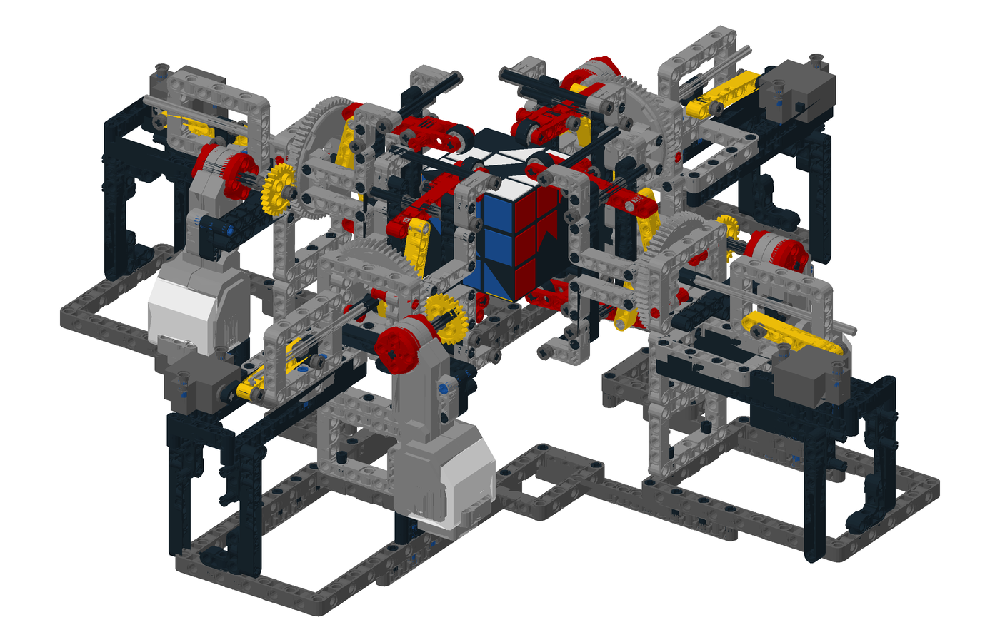
压头与传力
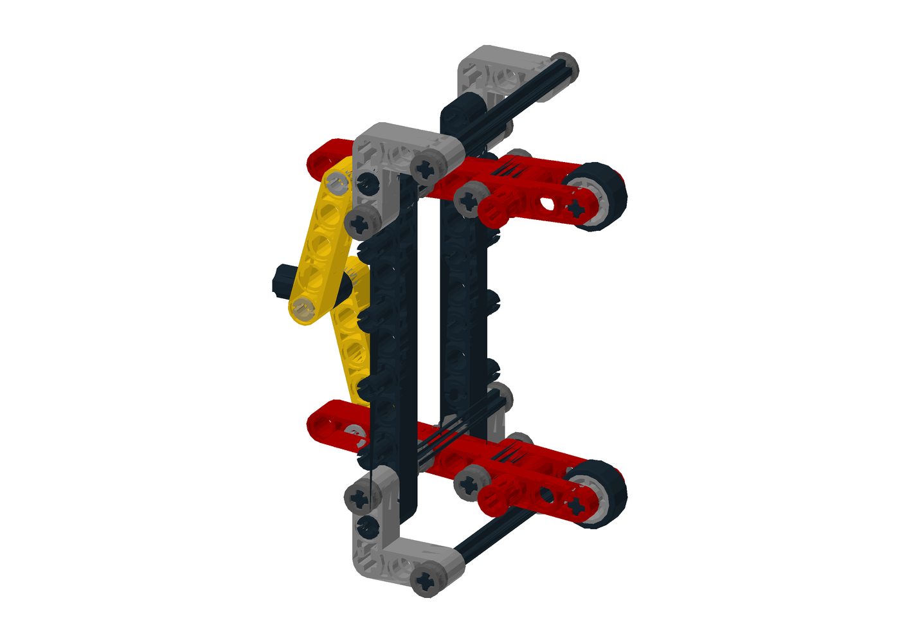
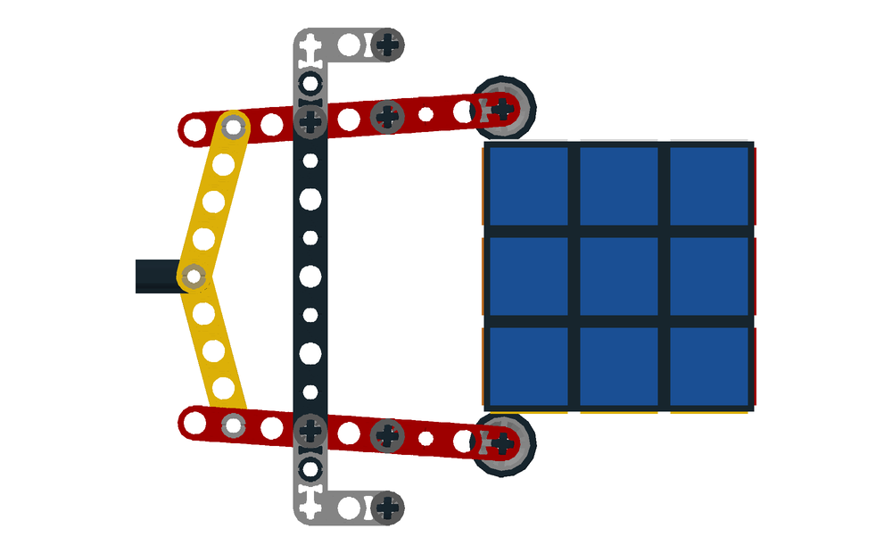
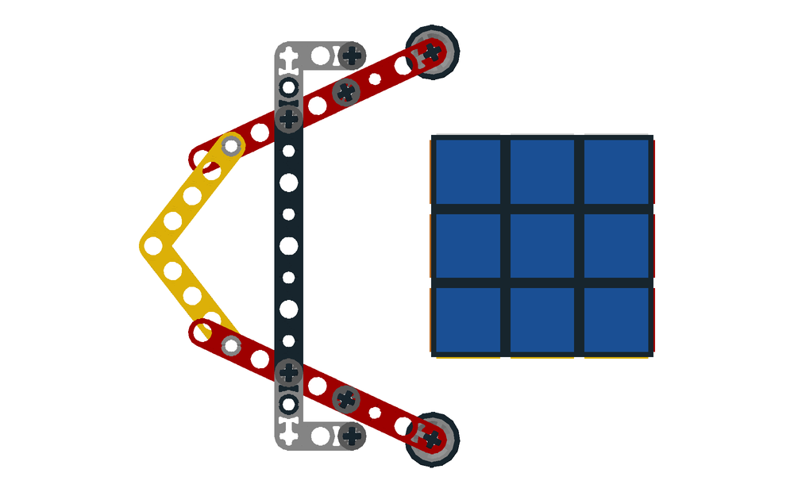

- 每臂前端：42610 ×2、50945 ×2、32449 ×4、32062 ×2、4519 ×2、32123a ×4、32054 ×2。
- 上下均为 7 孔主臂：第 2 孔接连杆，第 4 孔作支点，第 6、7 孔接薄梁。
- 32449 第 1 十字孔用三号轴贯穿主臂，两端半轴套固定；第 2 圆孔用 32054 挡套长销贯穿。第 3 孔空，第 4 十字孔用二号轴连接轮毂。
- 50945 按 14×6mm 外包络；42610 标称 11×8mm，CAD 网格外缘约 11.2mm。轮胎安装内槽保留原网格。
- 轮毂可以滚动；旋转魔方时需要轮胎沿轮轴方向的摩擦力。需要实测轴向滑移、拧层阻力和轮胎保持。
防翻折开限位
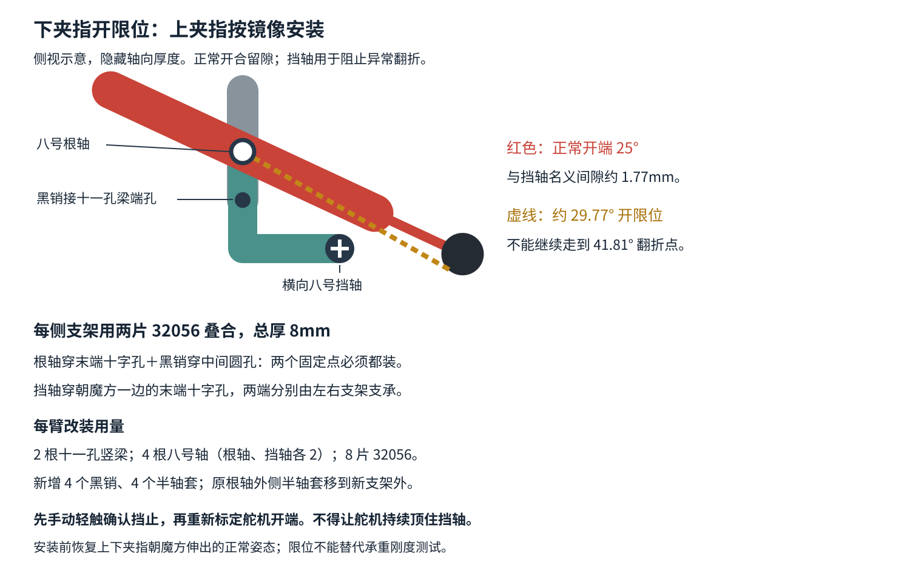
改装步骤与限位检查。正常开合留隙，只有异常继续张开才接触挡轴。
舵机粗连杆
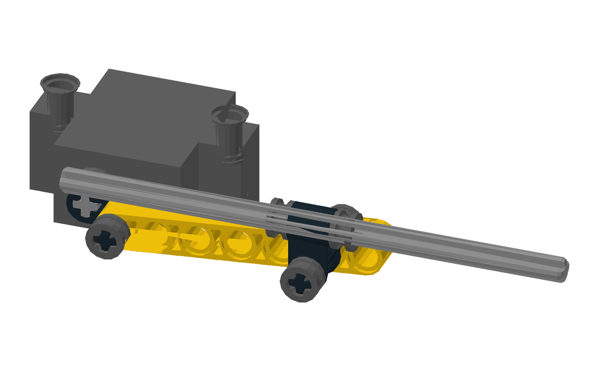

舵机相对旧版后移一孔（8mm），垫梁的黑销孔位也已调整。十字块端用三号轴和两只半轴套；粗连杆直接贴十字块。曲柄端二号轴内侧加半轴套，外端齐平。连杆第 1 孔朝魔方留空，不能反装；曲柄总行程约 97.10°。
可旋转模型
拖动旋转、滚轮缩放、右键平移；滑块按步骤查看。
下载含零件库的 MPD · LDraw 模型 · 零件清单 CSV · 设计与验证记录
零件清单
单模块不含公共底座；整机包含四个马达和四个舵机。轮胎按真实乐高编号列出，模型中使用用户给定尺寸的名义外包络。
| 零件 | 编号 | 单模块 | 整机 | 已计库存 | 扣除后补充 |
|---|---|---|---|---|---|
| 60 齿转盘 上半 | 18938 | 1 | 4 | 2 | 2 |
| 60 齿转盘 下半 | 18939 | 1 | 4 | 2 | 2 |
| 摩擦销 (2 孔长) | 2780 | 50 | 252 | 80 | 172 |
| 角度连接器 1 号 (一头十字孔, 一头横圆孔) | 32013 | 1 | 4 | 0 | 4 |
| 带挡套长销 (3 孔长, 红色) | 32054 | 4 | 16 | 12 | 4 |
| 3x3 L 形薄梁（端孔及弯角十字孔） | 32056 | 8 | 32 | 0 | 32 |
| 2 号轴 | 32062 | 3 | 12 | 0 | 12 |
| 半轴套 | 32123a | 20 | 80 | 0 | 80 |
| 15 孔粗梁 | 32278 | 2 | 16 | 6 | 10 |
| 5 孔粗梁 | 32316 | 5 | 20 | 8 | 12 |
| 4 孔薄梁（两端十字孔） | 32449 | 4 | 16 | 0 | 16 |
| 3 孔粗梁 | 32523 | 1 | 4 | 10 | 0 |
| 7 孔粗梁 | 32524 | 5 | 20 | 6 | 14 |
| 11 孔粗梁 | 32525 | 3 | 12 | 6 | 6 |
| 3x5 L 形粗梁 | 32526 | 4 | 16 | 10 | 6 |
| 无摩擦长销 (3 孔长, 米色) | 32556a | 1 | 4 | 0 | 4 |
| 24 齿直齿轮 | 3648b | 1 | 4 | 0 | 4 |
| 无摩擦销 (2 孔长, 灰色) | 3673 | 2 | 8 | 0 | 8 |
| 8 号轴 | 3707 | 4 | 16 | 0 | 16 |
| 12 号轴 | 3708 | 1 | 4 | 0 | 4 |
| 轴套 | 3713 | 5 | 20 | 0 | 20 |
| 15x11 大框 (45680 套装) | 39790 | 0 | 4 | 4 | 0 |
| 9 孔粗梁 | 40490 | 2 | 8 | 8 | 0 |
| 2 孔细梁 (两端十字孔) | 41677 | 1 | 4 | 0 | 4 |
| 42610 轮毂（11×8mm） | 42610 | 2 | 8 | 4 | 4 |
| 7 号轴 | 44294 | 1 | 4 | 0 | 4 |
| 3 号轴 | 4519 | 4 | 16 | 0 | 16 |
| 50945 橡胶胎（名义 14×6mm） | 50945 | 2 | 8 | 4 | 4 |
| 90° 弯角销连接器 3x3 (带 4 个销) | 55615 | 2 | 12 | 0 | 12 |
| 轴连接器 (光面, 两头十字孔) | 59443 | 1 | 4 | 0 | 4 |
| 7x5 框架 | 64179 | 5 | 24 | 8 | 16 |
| 十字块 1x2 (十字孔 + 圆孔) | 6536 | 1 | 4 | 0 | 4 |
| 长摩擦销 (3 孔长) | 6558 | 5 | 28 | 36 | 0 |
| EV3 大马达 | 95658 | 1 | 4 | 2 | 2 |
| Geekservo 舵机 (灰色, 270°) | geekservo | 1 | 4 | 0 | 4 |
套装数量沿用仓库清单，大框按已有 4 块计。42610、50945 已有各 4 件，整机各需 8 件，按用户确认另补各 4 件。32449 整机需 16 根，未确认库存；原有 11478 五孔薄梁不能按同一孔位直接替换。其他未录入的零件按 0 计；补充数量需先扣除散件库存。马达已有 2 个，整机还需 2 个。
01 · 底座

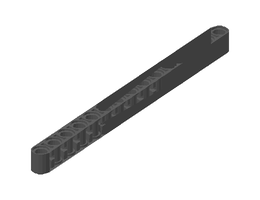
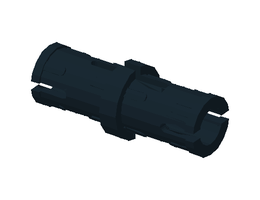
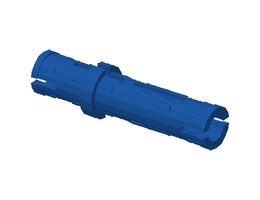
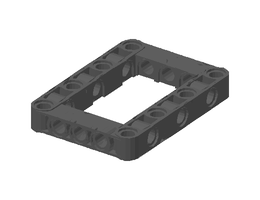
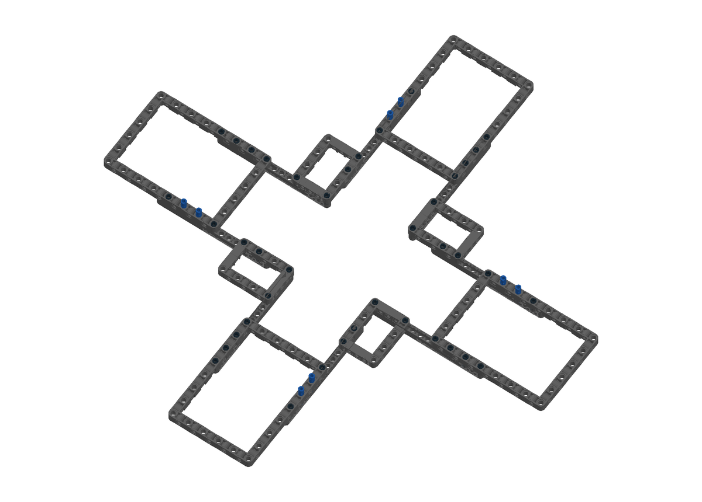
4 块 15x11 大框 (45680 套装里的) 摆成十字形, 每块的长边朝外, 靠里的短边就是竖墙的位置, 相对两块的短边相距 28 个孔; 大框偏在长边中线的一侧半个孔 (看图)。大框下面垫 15 孔梁, 梁贴着桌面: 每块大框的两条长边下面各一根: 长边上的竖孔是隔一个一个的, 最靠里的 4 个竖孔各插 1 个销, 其中马达那一侧长边的第 2、3 个用蓝色长销 (1 孔长的一段朝下插进梁, 上面露出 1 孔, 以后接马达底块; 看图), 其余用摩擦销, 梁的一头伸出大框、到角上 (伸出多少看图)。相邻两块大框的梁在角上一横一竖摆放，角上放一块 7x5 框架（与大框同层），跨过两根下梁，4 个摩擦销（每根下梁 2 个）；短边两端孔接本侧下梁，长边第 5、7 孔接邻侧下梁。四个角做法一样。
02 · 竖墙
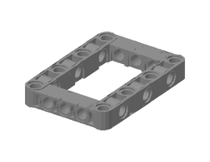
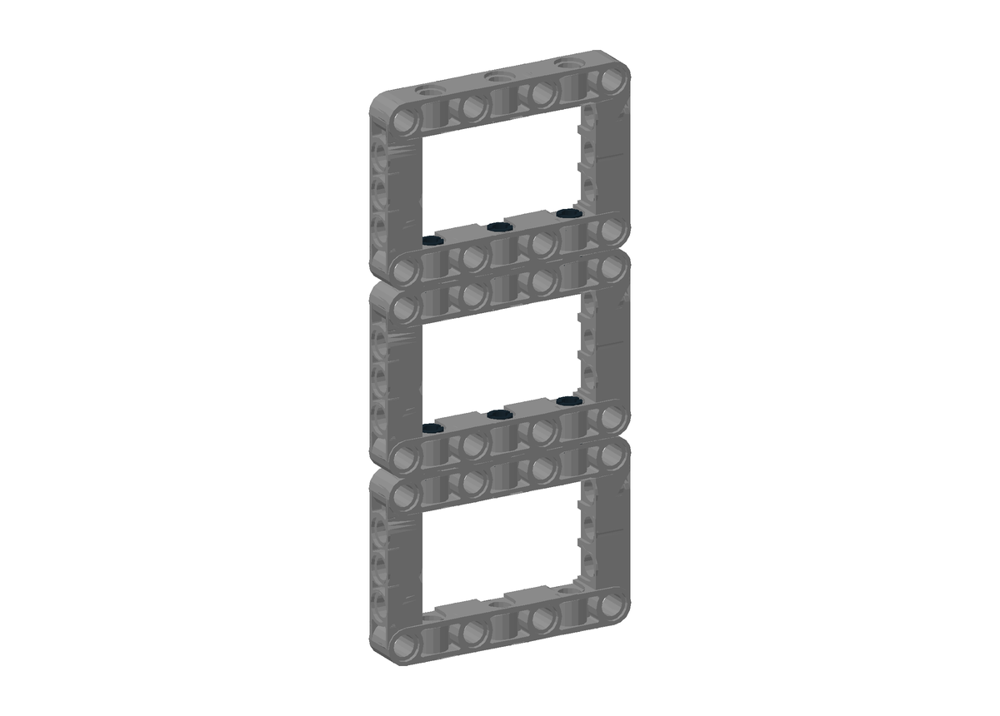
三块 7x5 框架竖着上下对齐, 相邻长边各用 3 个摩擦销穿侧孔连起来, 拼成一面 7x15 的墙。
03 · 马达底块
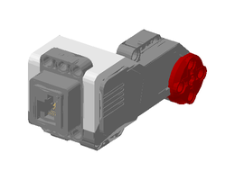
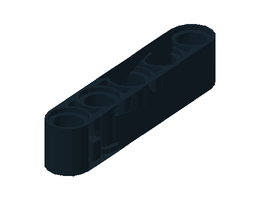
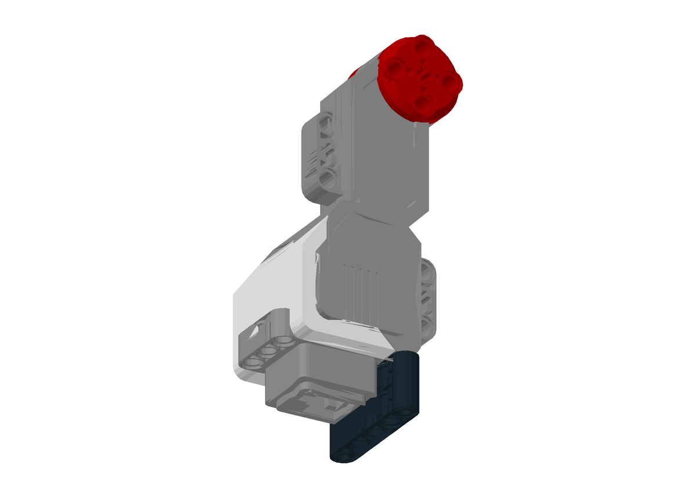
马达平放、底面朝上 (底面就是本体最下面、离输出盘最远的那一面), 底面上一排 3 个销孔。3 个孔各插 1 个摩擦销, 压上一根 5 孔粗梁 (梁的第 2、3、4 个孔扣在这 3 个销上); 再在这根梁两头 (第 1、5 个) 的孔各插 1 个摩擦销, 压上第二根 5 孔粗梁, 两根梁对齐叠在一起。
04 · 马达前梁
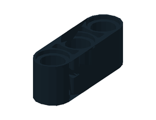
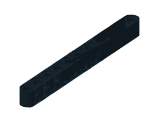
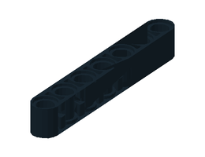
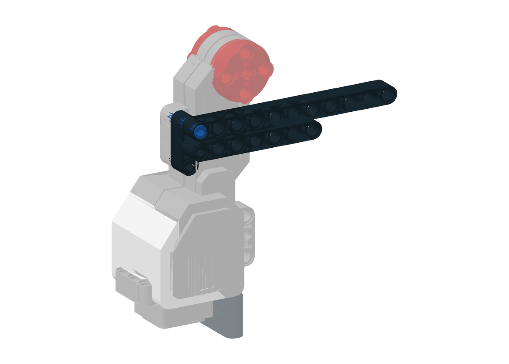
马达靠输出盘那一侧, 输出盘下面有一段缩进去 2 个孔深的 "颈部", 上面一竖列 3 个横穿马达的孔 (两个圆孔夹一个十字孔)。先在上圆孔插 1 根蓝色长摩擦销 (1 孔长的那段插进马达, 挡肩贴住颈部), 下圆孔插 1 个摩擦销; 把一根 3 孔粗梁竖着压到这两个销上。再在 3 孔梁中间的孔插 1 个摩擦销。然后把两根横梁压上去, 都朝竖墙的方向伸出: 11 孔粗梁的第 1 个孔扣在蓝色长销上, 7 孔粗梁的第 1 个孔扣在中间的摩擦销上。
05 · 齿轮
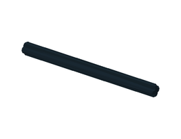
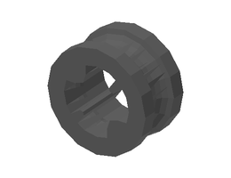
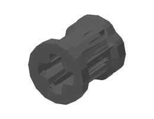
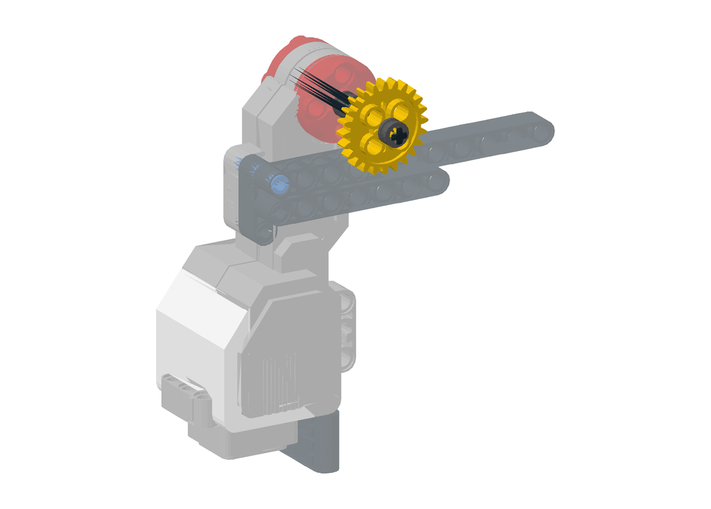
7 号轴从这一面插进马达输出盘中间的十字孔, 一直推到底: 输出盘的十字孔是贯通的 (马达两面都有输出盘), 轴的另一头和马达另一面的输出盘基本平齐 (只露出不到 1 mm)。这样马达里占 3 个孔长, 外面露出约 4 个孔长。然后依次套上 2 个半轴套、1 个轴套、24 齿直齿轮, 最前面再套 1 个半轴套, 正好套到轴头。
06 · 装马达
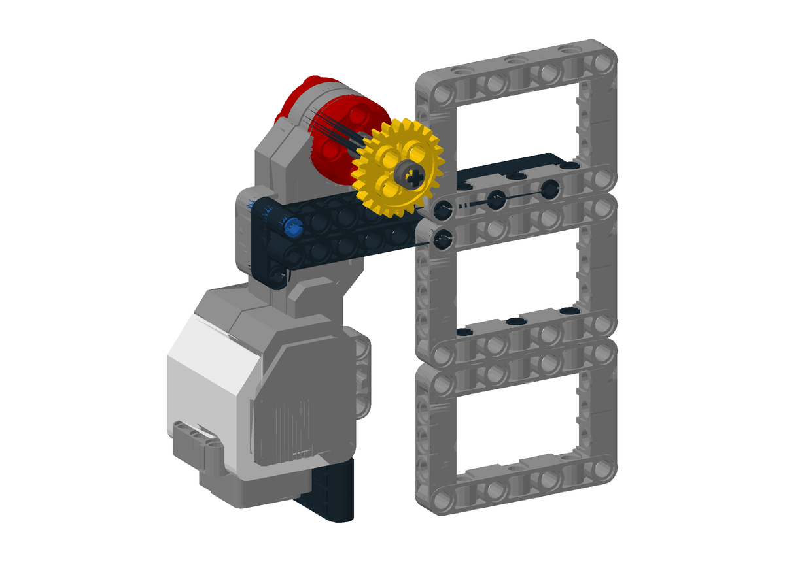
在两根横梁上对准竖墙框架正面孔的位置插摩擦销: 11 孔梁 3 个 (接最上面那块框架), 7 孔梁 1 个 (从马达数第 6 个孔, 接中间那块框架)。把整个马达组件平推到竖墙背面, 4 个销同时插进墙上的孔。马达底块的下表面和竖墙的下边平齐。装机械头时 24 齿齿轮和转盘上半的齿啮合 (两轴相距 5 个孔, 齿轮背面和转盘背面平齐; 24 齿是实测咬合最好的)。
07 · 转盘下半
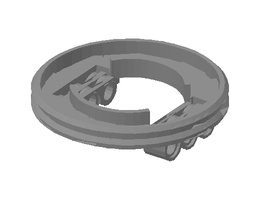
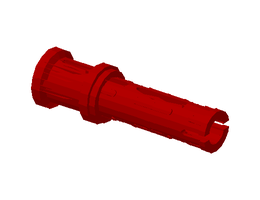
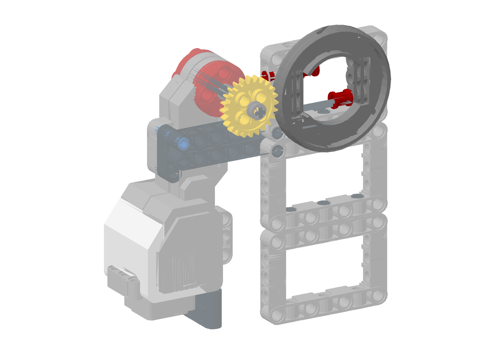
60 齿转盘的下半 (没有齿): 底部的长方形凸台从正面 (朝魔方的一面) 塞进最上面那块框架的开口, 长边沿框架的长边, 圆盘的边沿贴住框架正面。然后从转盘中孔里面插 2 根红色带挡套长销: 把销平放进凸台里面 (凸台两端壁之间正好放下一根, 很紧), 再往外推, 销穿过凸台端壁插进框架短边, 挡套留在凸台里面。一根用上排孔, 另一根用另一头的下排孔 (同一排两根的挡套会互相挡住)。
08 · 装竖墙
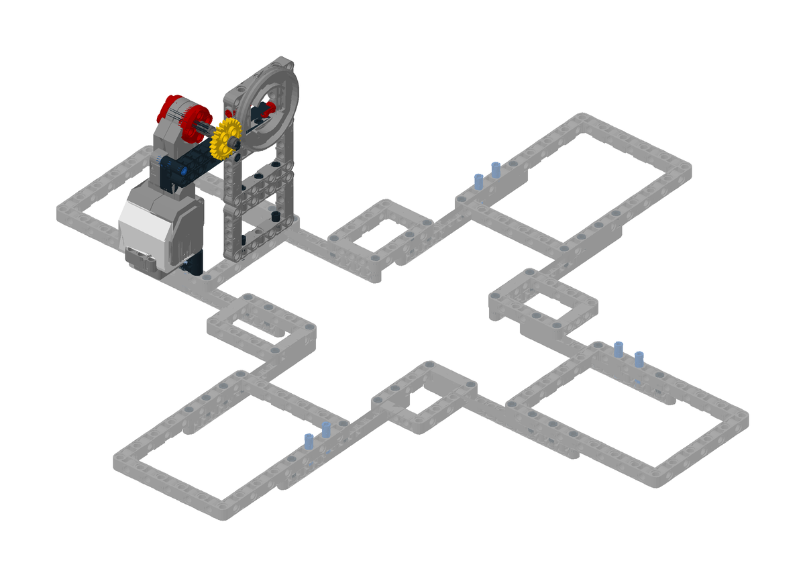
竖墙和马达现在是一个整体, 一起竖着往下压到底座上: 竖墙立在大框靠魔方的那条短边正中, 墙面朝魔方; 马达底块压在大框的长边上。先在大框短边上插 2 个摩擦销 (对准墙底边的侧孔); 长边上第 1 步插的 2 根蓝色长销露在上面, 正好对准马达底块下层梁的第 2、4 个孔。然后整体对准压下去。
09 · 舵机平台
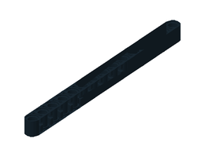
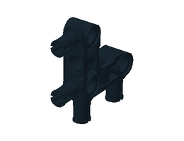
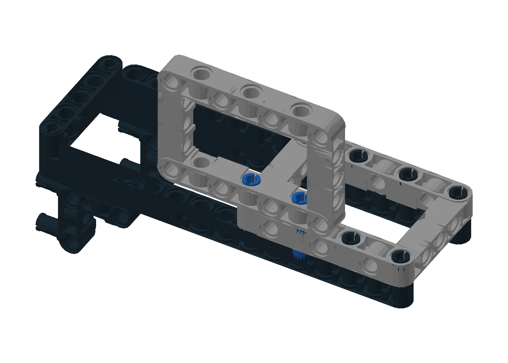
两根 15 孔粗梁平放、平行, 相距 4 个孔。一块 7x5 框架平放压在两根梁的前段上 (框架前端和梁前端对齐), 6 个摩擦销竖着连起来 (框架正面孔: 一根梁 4 个, 另一根梁靠前的 2 个孔各插 1 个, 靠后的 2 个孔留给导向框架的长销)。梁的后段上面, 舵机那一侧压一根 7 孔粗梁当舵机垫块: 从平台后端向魔方数，第 3、6、7 孔用黑销接下面的 15 孔梁，第 1、5 孔留给舵机耳朵的蓝色长销。第 2、4 孔下方由 55615 占用，不加贯穿销。两根梁的最后一个孔上横压一根 5 孔粗梁, 2 个摩擦销, 让后段也连成封闭的长方形。两根梁后段的下面各挂一个 55615 (90° 弯角销连接器): 横臂顺着梁、竖臂朝下, 横臂上朝上的 2 个销从下面插进梁孔: 马达那一侧的梁插倒数第 2、4 个孔; 舵机那一侧的梁插倒数第 3、5 个孔 (倒数第 5 个孔就在垫块空着的第 4 个孔正下方); 竖臂上的 2 个孔朝外 (朝平台两侧)。平台前段上面竖立一块框架当推杆导向: 它长边沿推杆方向, 框架比原版后移两孔, 底边用 2 根蓝色长摩擦销竖着插进平台: 1 孔长的一段朝上插进导向框架, 2 孔长的一段穿过平台框架, 一直插进下面那根 15 孔梁; 原来最前面的蓝销改为黑销, 只连接平台框架与下方梁。导向框架两条短边上正中的侧孔 (圆孔) 就是推杆的两个轴承。
10 · 舵机
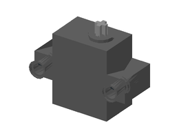
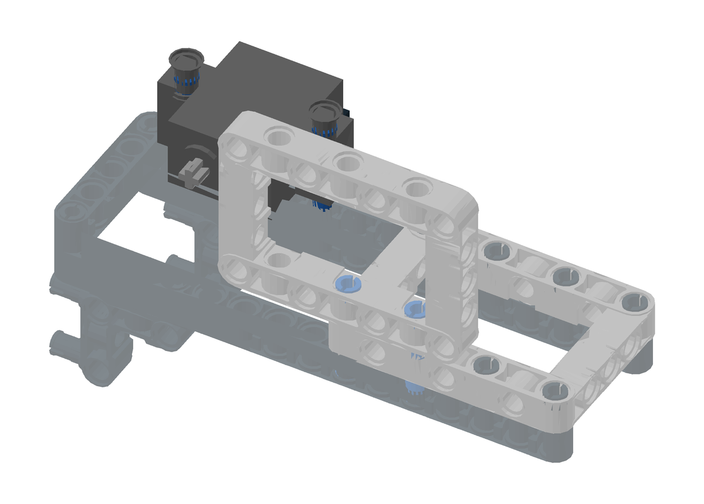
舵机平放在平台后端的垫块上, 输出轴朝推杆那一侧。2 根蓝色长摩擦销从上面插进舵机两只耳朵, 1 孔长的那段朝下插进垫块第 1、5 孔 (从平台后端向魔方数), 避开垫块的 3 个黑色摩擦销。
11 · 装平台
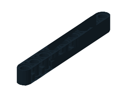
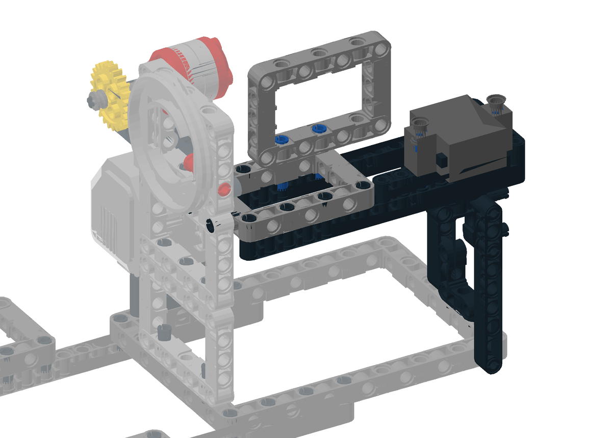
先在大框后短边 (离竖墙最远的那条短边) 上放一个 55615: 横臂顺着短边, 朝下的 2 个销插进短边第 1、2 个竖孔 (从马达那一侧数, 看图), 竖臂朝上, 竖臂上的 2 个销朝马达那一侧。然后平台前端顶住竖墙背面, 2 个摩擦销沿推杆方向穿进墙的孔。检查导向框架的两个轴承孔、转盘中孔在一条直线上。最后装两根竖梁 (9 孔粗梁), 都从外侧压上去: 马达那一侧, 先在平台下 55615 的 2 个孔里插摩擦销, 竖梁上端 2 个孔套这 2 个销、下端 2 个孔套底座上 55615 的 2 个销; 另一侧, 在平台下 55615 的 2 个孔和大框长边外侧的侧孔 (看图) 各插 1 个摩擦销, 竖梁压上去, 下端最后一个孔接大框。
12 · 十字块和舵机连杆
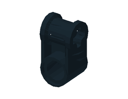
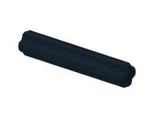
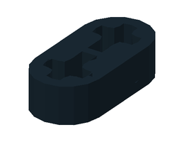

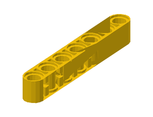
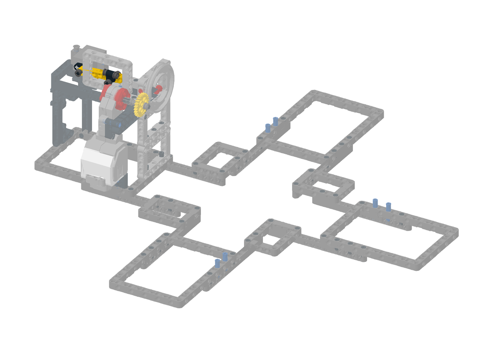
十字块圆孔在上，放进导向框架的开口里，圆孔对准推杆轴承孔；两侧各放一个半轴套，推杆后面穿入。3 号轴穿过十字块下面的十字孔：背离舵机的一端露半孔，套半轴套；朝舵机的一端依次套黄色 7 孔粗梁 32524、半轴套。粗梁直接贴十字块，之间不加轴套。连杆从靠魔方那端数，第 2 孔接十字块，第 7 孔接曲柄；第 1 孔留空。两铰点相距 5 个孔距（40mm）。图示是最终夹紧位置。首次装配先让连杆曲柄端脱开，按单臂标定步骤用 servo 1500 空载定位，断电后在行程中间调整曲柄方向并连接。曲柄端用 2 号轴，外端与曲柄外侧齐平；内端穿过粗连杆后装半轴套，半轴套贴住连杆。从夹紧端开合时，曲柄轴必须沿远离推杆的一侧圆弧运动，不能走旧版靠推杆的一侧。检查轴与半轴套不松脱，并手动走完整行程和推杆回转。不要带连杆直接首次定位或硬拉对孔。
13 · 侧板与夹指架
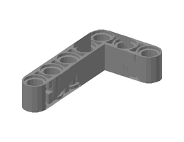
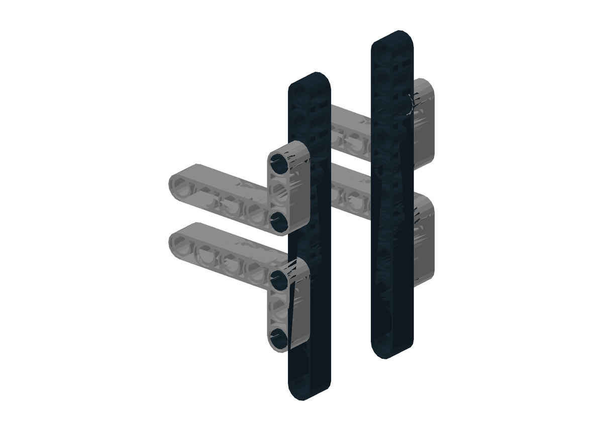
两根 3x5 L 形梁竖放, 长臂沿推杆方向, 两根长臂一上一下平行 (相距 2 个孔), 短臂都在靠魔方的一头, 一根朝上、一根朝下; 内侧贴一根 11 孔粗梁 (竖直)，4 个摩擦销穿过两根 L 形梁的短臂和长臂末端连起来。11 孔梁从上往下第 2、10 孔是夹指根轴孔，第 1、11 孔留给开限位支架。这样做两套，左右对称。
14 · 转盘上半
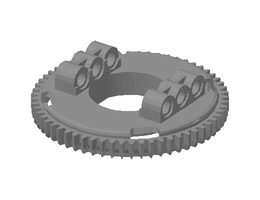
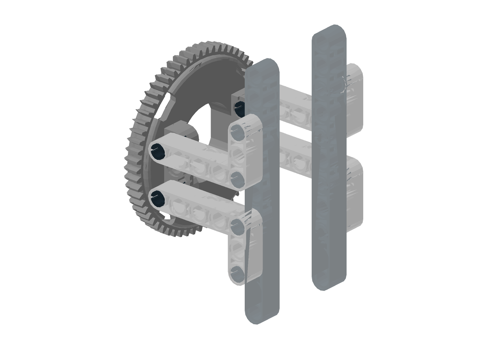
60 齿转盘的上半 (有齿): 先在底部凸台两头各插 2 个摩擦销 (上下两个孔, 挡环贴住凸台端面), 有齿的一面朝后。再把两套侧板从左右两边压到销上, 两根 L 形梁长臂后端的孔对准销, 粗梁在内侧朝魔方。
15 · 夹指与防翻折限位
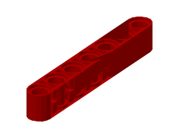
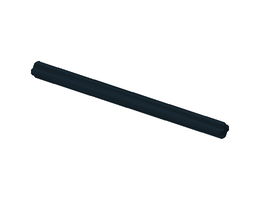
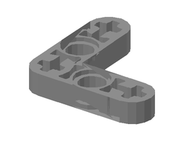
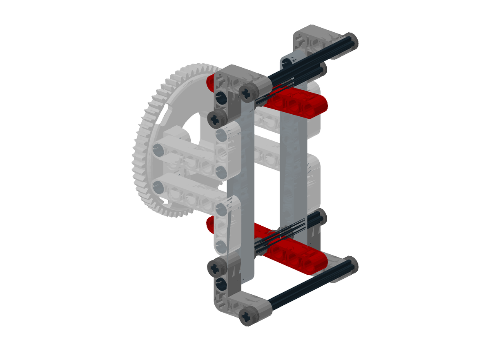
上下各一根红色 7 孔粗梁当夹指，中间第 4 孔套 8 号根轴。根轴穿过两侧 11 孔梁的第 2 或第 10 孔；夹指两侧各一个整轴套。每个夹指两侧各叠两片 32056 三乘三 L 形薄梁作限位支架（每侧总厚8mm）：竖边贴住11孔梁外侧，末端十字孔套根轴，中间圆孔用黑销接11孔梁端孔；另一边朝魔方，位于夹指外侧。根轴两端在新 L 形支架外各装一个半轴套，不要压紧夹指。根轴＋黑销两点固定支架，不能只装黑销。两侧新 L 形薄梁朝魔方的末端十字孔穿另一根 8 号轴，两端各加半轴套，作为横向开限位挡轴。上下各有一根。正常开角为 25°，不能接触挡轴；异常继续张开时约 30° 被挡住，防止接近 41.8° 翻折位置。安装前把上下夹指都放回朝魔方的正常姿态，不能从错误分支直接套入。挡轴是异常行程保护，舵机不得持续顶住它。
16 · 双侧薄梁轮胎压头
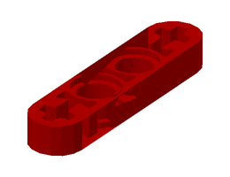
每臂上下各一组 42610 轮毂＋50945 轮胎，每组轮毂两侧各用一根 32449 四孔薄梁（两端十字孔、中间两个圆孔）。两根薄梁分别贴住主臂两侧。从后端数：主臂第 6 孔用 3 号轴贯穿两根薄梁的第 1 十字孔，外面各装一个半轴套；主臂第 7 孔用 32054 带挡套长销贯穿两根薄梁的第 2 圆孔，挡套留在第一根薄梁外侧，销端穿出另一根薄梁。两根薄梁第 3 圆孔留空。第 4 十字孔用 2 号轴贯穿，中间套轮毂，轮胎中心保持在主臂中面。2 号轴的两端与薄梁外侧齐平，不加外轴套，不换长轴。轮毂被两根薄梁限制轴向移动，仍可绕固定十字轴转动；确认没有夹死。安装好半轴套和挡套销，再检查轮轴是否会窜出。上下两组装配完全相同。
17 · 连杆与十字接头

十字接头用角度连接器 1 号 (32013, 很常见): 一头是顺着长度方向的十字孔 (下一步插推杆), 另一头是横着的圆孔。注意不要拿成外形几乎一样、两个孔都是十字孔的 32039。圆孔里穿一根米色无摩擦长销, 两根黄色 5 孔连杆一上一下套在长销两端; 连杆另一端各用一个灰色无摩擦销接到上下主臂各自的第 2 孔（从后数）。十字接头往前推时连杆把夹指根部往外撑, 夹指前端合拢; 夹紧端点在主臂外张约 3.84°，输入连杆尚未到垂直死点。橡胶胎先接触魔方，再轻微受压形成预压；不能继续硬推到旧版死点。
18 · 推杆


推杆用 3 号轴 + 光面轴连接器 + 12 号轴接成 15 孔长: 3 号轴的一端插进十字接头到底, 另一端插进连接器半长, 再把 12 号轴从另一头插入到底 (两根轴在连接器中间顶住)。3 号轴中间有一孔露在外面, 不要强推连接器去贴十字接头。
19 · 装机械头
推杆从转盘下半的中孔往后穿, 依次穿过导向框架前面的轴承孔、半轴套、十字块、半轴套、后面的轴承孔。转盘上半对准下半扣上 (两半本身卡在一起, 不用销)。安装全程断电, 舵机曲柄与黄色连杆暂不连接。先让推杆和夹指在无负载下平顺活动, 十字块两边半轴套不要夹得过紧。随后按 docs/single_arm.md 第 3 步进行空载定位、中间位置连接和小步标定。确认夹紧位置后再断电调整十字块在推杆上的位置, 使主臂处于图示约 3.84° 外张角，橡胶胎接触魔方并有轻微压缩, 并将两侧半轴套贴近十字块。图示是最终夹紧状态, 不要求首次装配就用舵机强推到死点。
20 · 装另外三个机械手
照上面的步骤再做三个一样的机械手, 装到底座的另外三排上。四根推杆的轴线都过魔方中心, 两两垂直 (底座的孔位保证了这一点, 不用调)。
21 · 放入魔方
四个舵机都转到 "松开", 四个机械手都转到竖直 (夹指一上一下)。魔方放在中间, 先夹紧 L、R, 再夹紧 F、B。
验证与单臂验收
重力承重与下沉测试 · 承重记录表：先测整头倾斜、上下轮端位移和魔方中心下沉，再进行交接与翻转。
以下为双侧版的实物试装与标定步骤。检查范围和结果见 完整机械审查。夹紧力、刚度和轮胎保持力均待实测。
- 先将 50945 套在 42610 上，用二号轴安装在两片 32449 之间；检查轮毂转动、轮轴保持及轮胎配合。
- 确认薄梁第 1 十字孔装三号轴和两只半轴套、第 2 圆孔装挡套长销；轮毂装第 4 十字孔。舵机七孔粗连杆用第 2、7 孔，曲柄二号轴内侧装半轴套。
- 先按 防翻折试装步骤轻推确认上下挡轴有效，正常25°开度留有间隙，不能持续顶住挡轴。
- 按 单臂标定步骤先脱开曲柄、空载定位，再在行程中间断电连接。
- 夹紧端以接触和轻微压缩为准，小步推进；图示 3.84° 是参考值，旧版脉宽不能直接使用。检查推杆十字块两侧半轴套有没有沿轴滑移。
- 开端参考推杆后退 10.00mm、主臂外张 25°。改变轮胎、轴长或开角后重新检查避让。
- 单臂夹紧后检查横向滑动、轴向滑动和拧层阻力，再低速测试翻转。记录实测外径、脉宽、夹紧保持情况，之后再复制四臂。
相邻机械手保持竖直时才允许另一只转动；使用 --no-adjacent-horizontal。禁止把相邻机械手同时转到水平。